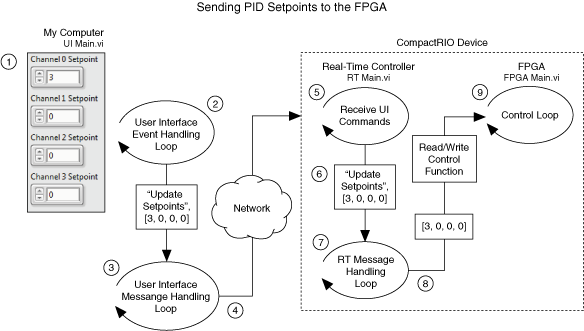

LabVIEW FPGA Control on CompactRIO
The LabVIEW FPGA Control on CompactRIO sample project implements deterministic, hardware-based control of a plant. The control algorithm, which was written with the LabVIEW FPGA Module, runs on the FPGA inside the CompactRIO device. You send commands and setpoint changes to the FPGA from the user interface, running on a desktop computer, by way of the real-time controller in the device. This controller also monitors the status of the application, such as CPU load and memory usage.
This sample project is based on the Simple State Machine and Queued Message Handler templates. Refer to the Simple State Machine and Queued Message Handler templates and their documentation, available from the Create Project dialog box, for information about how these templates work.
Features
- High-performance control—The control loop can run faster than 10 kHz and features four control algorithms operating in parallel, all with minimal jitter.
- Hardware-based control—Running the control algorithm and safety logic on the FPGA provides maximum reliability.
- User interface with headless option—The user interface VI interacts with the CompactRIO device and displays data. This VI can connect and disconnect from the device at any time without affecting the control loop.
- Error handling—The application reports and logs all errors from the CompactRIO device, shutting down on any critical error.
System Requirements
Development System
- LabVIEW Full or Professional Development System
- LabVIEW FPGA Module
- LabVIEW Real-Time Module
- NI-RIO device driver software
NI CompactRIO Device in FPGA Interface Mode
This sample project is designed for an NI cRIO-9074 with the following components:
- Software:
- LabVIEW Real-Time
- Network Streams
- Network Variable Engine
- NI System Configuration
- NI-RIO
- NI-Watchdog
- I/O modules:
- NI C Series analog input module. This sample project is designed to read four channels of analog input from an NI 9201 module in slot 1.
- NI C Series analog output module. This sample project is designed to write four channels of analog output to an NI 9263 module in slot 2.
Overview
This sample project consists of nine parallel loops across three execution targets.
The following loops run in parallel on the desktop computer:
- Handling events from the user interface (UI Main.vi - Event Handling Loop)—Produces messages to the UI Message Loop based on front panel events.
- Handling messages from the user interface and the real-time controller (UI Main.vi - UI Message Loop)—Receives and responds to messages from the Event Handling Loop and, using network streams, the RT Message Handling Loop.
- Displaying messages and data from the CompactRIO device (UI Main.vi - Monitoring Loop)—Displays the latest values of information acquired from RT Loop - System Health and FPGA Monitoring.vi.
The following loops run in parallel on the real-time controller:
- Handling commands from the user interface (RT Loop - UI Commands.vi)—Reads commands sent from UI Main.vi, using network streams, and produces the appropriate messages.
- Handling messages from all loops on the real-time controller (RT Main.vi - Message Handling Loop)—Consumes messages from all loops that run on the real-time controller.
- Ensuring the FPGA can communicate with the real-time controller (RT Loop - Watchdog.vi)—Pets the watchdog, which tells the FPGA that the RT controller still is running, by asserting a register on the FPGA.
- Monitoring diagnostic information from the real-time controller and data from the FPGA (RT Loop - System Health and FPGA Monitoring.vi)—Monitors CPU and memory usage of the real-time controller and data from FPGA Main.vi. This information is written to network-published shared variables and appears on the Data Monitoring and System Monitoring tabs of UI Main.vi.
The following loops run in parallel on the FPGA:
- Controlling the plant (FPGA Main.vi - Control Loop)—Reads from the NI 9201 inputs, applies a control algorithm to each channel, and writes to the NI 9263 outputs. The control algorithm uses setpoint data and PID gains sent from the user interface.
- Ensuring the FPGA can communicate with the real-time controller (FPGA Main.vi - Watchdog Loop)—Checks the watchdog register, set by RT Loop - Watchdog.vi, to ensure the real-time controller is communicating with the FPGA. If communication cannot be established, the Watchdog Loop sets the FPGA to a safe state and reboots the device.
The following illustration shows how PID setpoint values are transferred from the user interface to the FPGA. This process involves a subset of the loops described above.

This illustration shows the following sequence of steps:
- A user changes the value of a setpoint; for example, changing the Channel 0 Setpoint control from 0 to 3. This change causes LabVIEW to register an event.
- The Event structure in the User Interface Event Handling Loop triggers the appropriate message diagram, which produces the Update Setpoints message to the message queue. The values of all four setpoint controls, including the changed value, are enqueued as data along with the message.
- The UI Message Handling Loop consumes the message and data, dequeuing it and executing the corresponding message diagram.
- The message diagram contains code that writes the Update Setpoints message and data to a network stream.
- On the real-time controller, the UI Commands loop reads the message and the data from the network stream.
- The UI Commands loop relays the same Update Setpoints message and data to the RT Message Handling Loop that is also running on the real-time controller.
- The RT Message Handling Loop consumes the message and data, dequeueing it and executing the corresponding message diagram.
- The message diagram contains code that writes the data to the front panel of the FPGA VI, using the Read/Write Control function.
- On the FPGA, the Control Loop uses the data in its control algorithm.
Running this Sample Project
- Adapt the sample project to your hardware.
- In the Project Explorer window, run RT CompactRIO Target»RT Main.vi. This VI initializes the FPGA and runs FPGA Main.vi.
- Open and run My Computer»UI Main.vi.
- Enter the IP address of the CompactRIO device in the Controller Address text box and click Connect.
- After you are connected, click either Run Control (on the Control Settings page) or Run Manual (on the Manual Settings page).
- Adjust the channel values as necessary and view the outputs on the Data Monitoring page. Until you define a control algorithm, all Output Values will read 0.
- Click Exit to exit the application.
Modifying this Sample Project
Adapting the Sample Project to Your Hardware
The FPGA VI in this sample project is compiled for specific FPGA and I/O hardware. If you have a different FPGA or different C Series modules, you must adapt this sample project to your hardware. The following steps refer to NI CompactRIO devices, but you also can adapt this sample project to an NI Single-Board RIO device.
- Ensure all devices are configured and connected to the same network as the development computer.
- In the Project Explorer window, add or discover your RT CompactRIO target to the to the top-level project item.
- Add or discover your CompactRIO chassis to the RT Compact RIO target you added in the previous step. Ensure the chassis is set to LabVIEW FPGA Interface mode.
- Add or discover your FPGA target to the CompactRIO chassis you added in the previous step. When prompted to deploy settings, click Deploy Later.
- Add or discover your C Series input and output modules to the FPGA target you added in the previous step.
- Drag the following project items from the default RT CompactRIO target to the one you added in step 2:
- Error Handlers folder
- Globals folder
- Support VIs folder
- RT Loops folder
- Type Definitions folder
- Shared Variables.lvlib
- RT Main.vi
- Drag the following project items from the default FPGA target to the one you added in step 4:
- Support VIs folder
- Type Definitions folder
- FPGA Main.vi
- Delete the default RT CompactRIO Target project item that no longer has any VIs associated with it.
- Re-establish the link between RT Main.vi and the bitfile:
- Open Initialize and Run FPGA VI.vi, located in the Support VIs folder on the RT CompactRIO Target.
- Drag FPGA Main.vi from the Project Explorer window to the Open FPGA VI Reference VI function.
- Open FPGA Main.vi and ensure the FPGA I/O Nodes use the input and output channels you want. For example, you may want an FPGA I/O Node to read from Mod2/AI5 instead of Mod1/AI2. The actual channels you read from and write to depend on your application.
By default, the FPGA I/O Nodes in this VI read from Mod1/AI0–3 and write to Mod2/AO0–3.
- To minimize time spent compiling, make necessary changes, such as defining a control algorithm and defining a safe state, now. You can compile and run the FPGA before making these changes; however, you will have to compile the FPGA VI again afterwards.
Defining a Control Algorithm
Locate the Control (PID) subdiagram of the Case structure in FPGA Main.vi and modify this subdiagram to apply a control algorithm. For example, you can use the PID Express VI that is included in the LabVIEW FPGA Module when you activate a license for the NI LabVIEW PID & Fuzzy Logic Toolkit. By default, this algorithm returns a constant value of 0 on all output channels. You can perform a different algorithm on each individual channel.
Although this sample project is designed to implement a PID algorithm, you can modify the sample project to use any algorithm.
Defining Safe Values for Hardware Connected to the C Series Modules
Modify the Safe State, Default subdiagram of the Case structure in FPGA Main.vi to write safe values to the output channels. The values you write here should be ones that you know the connected hardware can safely handle. By default, this subdiagram writes a value of 0 to all output channels.
This subdiagram executes in the following situations:
- When FPGA Main.vi first runs
- The watchdog algorithm times out
- An error occurs while reading from or writing to an FPGA I/O channel
- A "Critical" or "Non-Critical" error occurs on the desktop computer or real-time controller
- You click the Switch Target to Safe State, Stop Control, Stop Manual, or Exit button in UI Main.vi
Configuring the Application
In the Project Explorer window, open My Computer»Globals»Global - Configuration Options.vi. Use this VI to configure the following settings:
- If you are programming or testing the application, leave Debugging as TRUE. If you are building an application for deployment, set Debugging to FALSE.
- To change how the often the control algorithm executes, change the Control Period (ticks). The default is 40000 ticks of the FPGA clock.
- To change the time period during which both endpoints of a network stream must be established, change the Network Stream Connect Timeout (ms). The default is 5000 ms.
- To change how often the real-time controller polls the user interface for commands, change the Network Stream Polling Timeout (ms). The default is 500 ms.
- To change how often the real-time controller pets the watchdog, change the Watchdog Pet Rate (ms).The default is 100 ms.
- To change how long the FPGA has to respond to a watchdog pet, change the Timeout Period (ticks). The default is 40000000 ticks of the FPGA clock.
- To change how often the user interface updates with monitoring and health information from the CompactRIO device, change the Monitoring Loop Rate (ms). The default is 200 ms.
- To change the time period during which identical errors are considered duplicates, change the Error Log Duplicate Interval (ms). This control defines the interval of time during which only the first in a series of identical errors will be logged. For example, if an error occurs after 2000 ms have elapsed and occurs again after 5000 ms have elapsed, and Error Log Duplicate Interval (ms) is 6000 ms, the second occurrence is considered a duplicate and not logged. Only 3000 ms have elapsed, not the 6000 ms required to treat the second error as unique.
The default is 5000 ms.
- To change the names of the network streams, modify the UI Stream Name or RT Stream Name controls. These names affect the endpoint URLs but otherwise have no impact on the application.
- To change the location of the error log file, set the RT Error Log control. The default is c:\logs\logs.txt.
- To change the maximum size of the error log, change the Error Log Max Size (bytes) control. The default is 100000 bytes.
Additional Resources
Refer to the LabVIEW Help, available by selecting Help»LabVIEW Help from LabVIEW, for information about LabVIEW concepts or objects used in this sample project. You can also use the Context Help window to learn basic information about LabVIEW objects as you move the cursor over each object. To display the Context Help window in LabVIEW, select Help»Show Context Help.
Refer to ni.com for a developer walkthrough of the LabVIEW Real-Time sample projects.
Important Information
Copyright
© 2014 National Instruments Corporation. All rights reserved.
Under the copyright laws, this publication may not be reproduced or transmitted in any form, electronic or mechanical, including photocopying, recording, storing in an information retrieval system, or translating, in whole or in part, without the prior written consent of National Instruments Corporation.
National Instruments respects the intellectual property of others, and we ask our users to do the same. NI software is protected by copyright and other intellectual property laws. Where NI software may be used to reproduce software or other materials belonging to others, you may use NI software only to reproduce materials that you may reproduce in accordance with the terms of any applicable license or other legal restriction.
End-User License Agreements and Third-Party Legal Notices
You can find end-user license agreements (EULAs) and third-party legal notices in the following locations after installation:
- Notices are located in the <National Instruments>\_Legal Information and <National Instruments> directories.
- EULAs are located in the <National Instruments>\Shared\MDF\Legal\license directory.
- Review <National Instruments>\_Legal Information.txt for information on including legal information in installers built with NI products.
Trademarks
Refer to the NI Trademarks and Logo Guidelines at ni.com/trademarks for information on National Instruments trademarks. Other product and company names mentioned herein are trademarks or trade names of their respective companies.
Patents
For patents covering the National Instruments products/technology, refer to the appropriate location: Help»Patents in your software, the patents.txt file on your media, or the National Instruments Patent Notice at ni.com/patents.